دليل وقاموس الباب الرابع عشر: أسبقية المرور وفك التقاطعات والمفترقات
Precedenza agli incroci — الدليل التفاعلي الشامل لفك كافة المخططات الوزارية الـ 43 بنظام اليمين الحر، إشغال التقاطع، العبور المتزامن، وشواخص الأسبقية مع تفكيك الفخاخ لمستوى A2-B1.
أولاً: الخوارزمية الذهبية لحل أي تقاطع في الامتحان (4 خطوات حاسمة)
عندما يظهر أمامك أي سؤال تقاطع في شاشة الامتحان، اتبع هذا الترتيب المنطقي الصارم:
- 🚋 الترام (Il Tram): يمر أولاً من اليمين ومن اليسار في التقاطعات العادية غير المنظمة بإشارات.
- 🚑 مركبات الطوارئ: الإسعاف، الشرطة، والمطافئ لها الأولوية المطلقة بشرط تشغيل الصافرة (Sirena) والأضواء الزرقاء (Lampeggiante blu).
- ⚠️ فخ كويز: الترام لا يملك أولوية مطلقة دائماً؛ إذا كانت أمامه إشارة قف STOP أو إعطاء أسبقية أو ضوء أحمر، يقف إجبارياً!
- 🟡 طريق ذو أسبقية: المركبات على الطريق الرئيسي (الخط العريض باللوحة التكميلية) تمر أولاً.
- 🔻 STOP & DARE PRECEDENZA: المركبات التي تواجه هذه اللوحات تقف وتنتظر خلو الشارع ذي الأولوية.
- 🤝 اليمين الحر بين الشركاء: يطبق مبدأ اليمين الحر بين المركبات التي على الطريق الرئيسي أولاً، ثم بين المركبات على الطرق الفرعية ثانياً!
- 👀 من يمنه خالٍ؟ انظر إلى مسار كل مركبة؛ المركبة التي لا يأتي من يمينها أي مركبة تقطع خط سيرها هي التي تمر أولاً (Passa per primo).
- 🔄 الدوران التسلسلي: بمجرد خروج المركبة الأولى، يصبح يمين المركبة المجاورة لها خالياً فتعبر هي الأخرى، وهكذا باتجاه عقارب الساعة.
- ↩️ الانعطاف يساراً (Svolta a sinistra): يجب إعطاء الأسبقية للقادمين من الأمام (من المقابل).
- 🛑 التقدم لوسط التقاطع: إذا كان اليمين مشغولاً للجميع، تتقدم السيارة المنعطفة لليسار لوسط التقاطع (Impegna il centro) وتنتظر، فيفرغ يمين السيارة التي خلفها!
ثانياً: الأنماط الخمسة الشاملة للتقاطعات في بنك الوزارة
| النمط التقني | الخصائص والشروط القانونية | أبرز المخططات الوزارية | القاعدة الذهبية للحل |
|---|---|---|---|
| 1. التقاطع البسيط الكلاسيكي | غياب أي شواخص؛ مركبة واحدة فقط يمينها خالٍ تماماً. | Figura 608, 613, 615, 618, 632, 646, 659, 662 | ابحث عن اليمين الحر، ثم أدر عقارب الساعة بالتتابع. |
| 2. تقاطع الترام | وجود ترام يتحرك على قضبان وسط الشارع. | Figura 642, 639, 648, 651 | الترام يمر أولاً (أو ومعه سيارة لا تقاطعه)، ثم يستأنف اليمين الحر بين باقي السيارات. |
| 3. إشغال الوسط والتوقف | تقاطع فيه دوران كامل أو انعطاف يسار يقطع المسار. | Figura 638, 617, 634 | السيارة تتقدم للوسط وتتوقف، لتحرير يمين سيارة أخرى تعبر بالكامل، ثم تكمل الأولى مسارها! |
| 4. العبور المتزامن (Contemporaneamente) | مركبتان في التقاطع مساراهما لا يتقاطعان إطلاقاً. | Figura 648 (P و D معاً), Figura 650 (L و D معاً), Figura 610 | تعبران معاً في نفس اللحظة؛ وأي سؤال يزعم أسبقية إحداهما على الأخرى فهو Falso! |
| 5. تقاطع الخط العريض والأسبقية | وجود لوحة طريق ذي أسبقية مع لوحة الخط العريض المنحني. | Figura 652, 647, 654, 655, 665, 669 | أصحاب الخط العريض يمرون أولاً (مع تطبيق اليمين بينهم)، ثم أصحاب الطرق الفرعية ثانياً. |
ثالثاً: التحليل العميق لميكانيكية إشغال الوسط (Figura 638 النموذجية)
المخطط Figura 638 هو أشهر مخطط في تاريخ امتحان الباتنتي، ويتكرر في 19 سؤالاً وزارياً. إليك تفكيكه العلمي خطوة بخطوة:
🚗 تسلسل العبور في Figura 638:
- المركبة B تتقدم لمنتصف التقاطع (Impegna l'incrocio e si ferma al centro): لأن يمينها خالٍ بالنسبة للشارع، ولكنها تقف بالوسط لأنها تنعطف يساراً ويجب أن تعطي الأسبقية للمركبة N القادمة من الأمام.
- المركبة R تعبر بالكامل (Passa per prima completando): بتقدم المركبة B لمنتصف التقاطع، أصبح يمين المركبة R خالياً تماماً، فتعبر أولاً!
- المركبتان D و N تعبران معاً (Passano contemporaneamente): بعد خروج R، يخلو يمين D، والمركبة N يمينها خالٍ أيضاً ولا تتقاطع مع D، فيعبران معاً!
- المركبة B تكمل مسارها أخيراً (Conclude la svolta per ultima): بعد خلو التقاطع من N، تكمل B دورانها وتغادر.
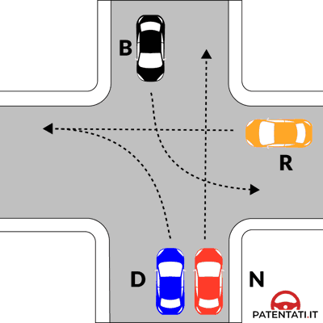
رابعاً: الكتالوج الوزاري الشامل لكافة المخططات الرسمية الـ 43 (Figure Ministeriali)
ابحث عن رقم المخطط أو اسم السيارة لتصفية المخطط ومعرفة ترتيب العبور المعتمد وأهم الأسئلة الوزارية:
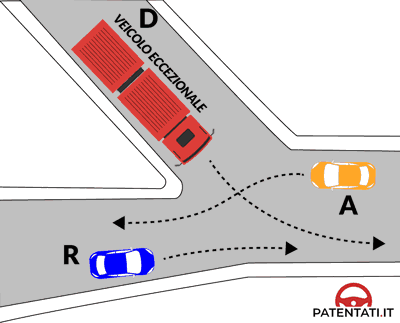
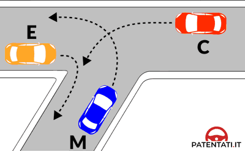
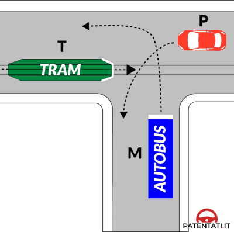
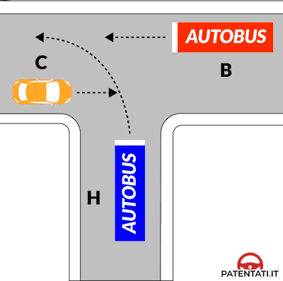
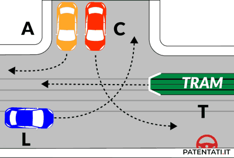
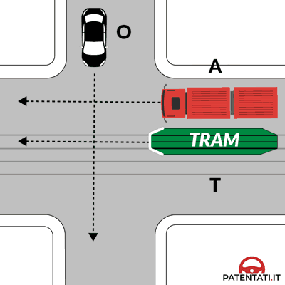
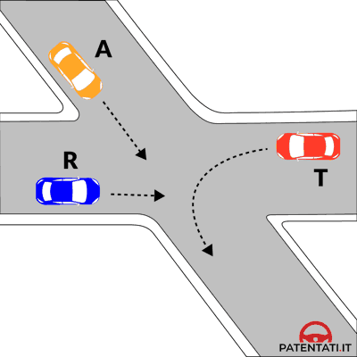
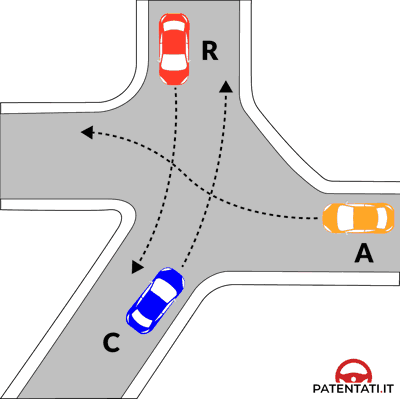
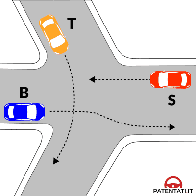
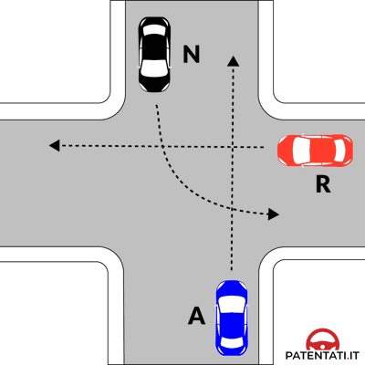
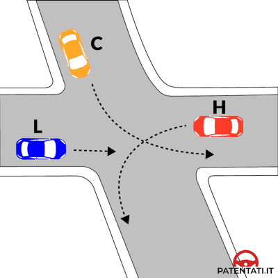
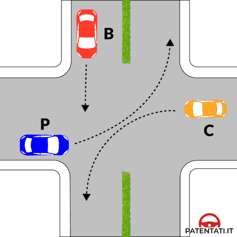
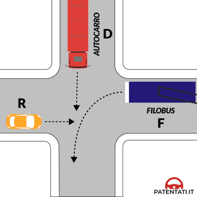
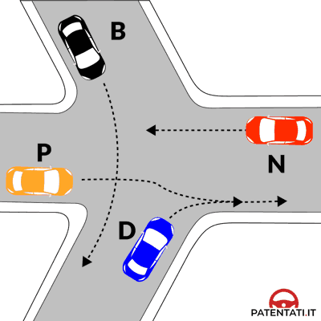
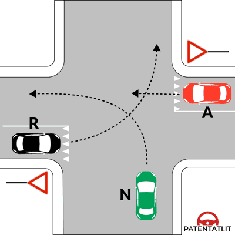
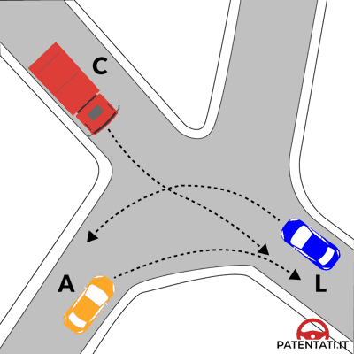
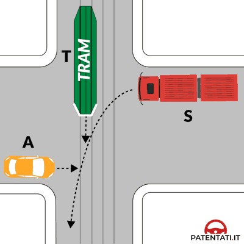
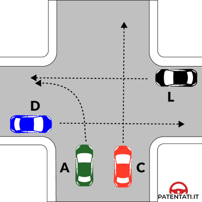
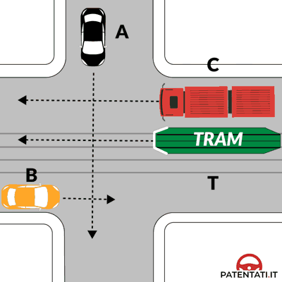
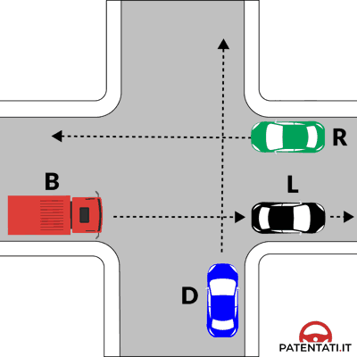
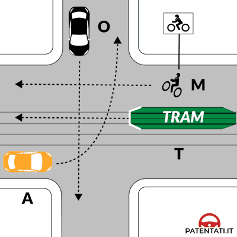
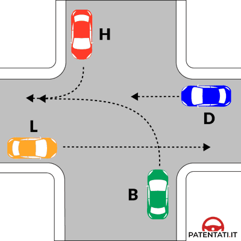
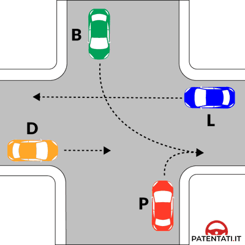
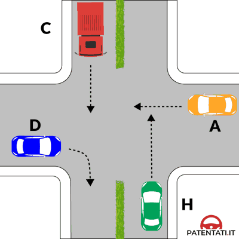
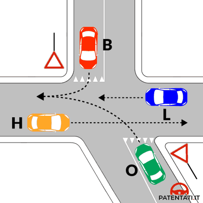
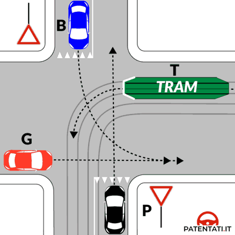
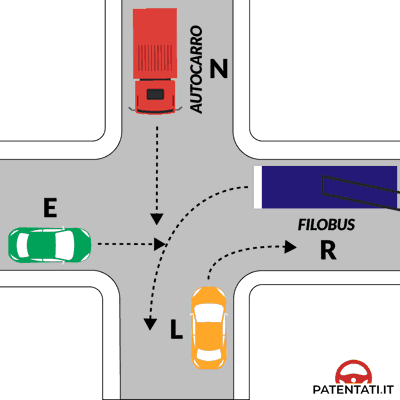
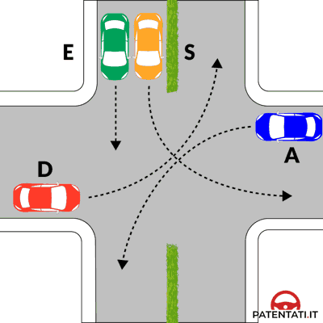
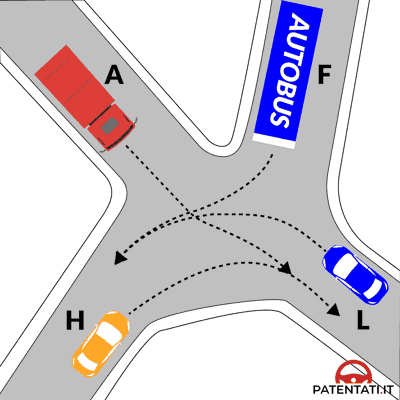
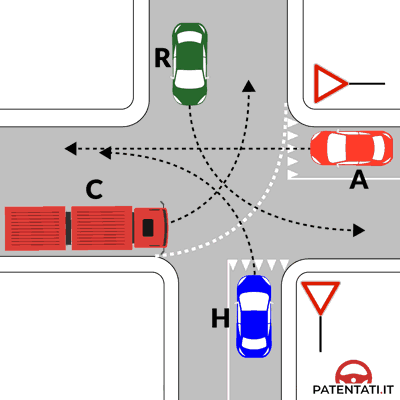
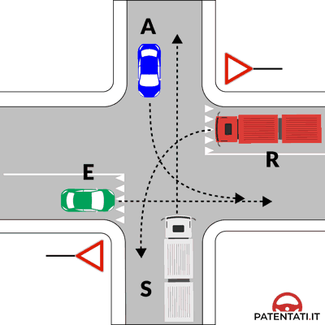

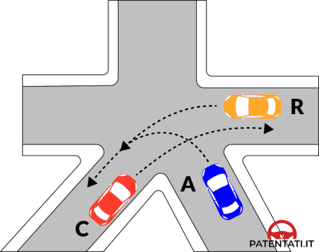
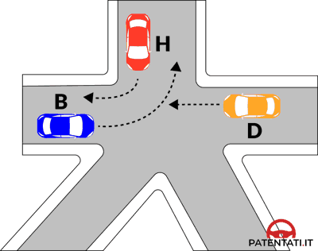
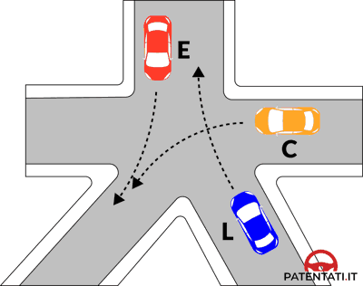
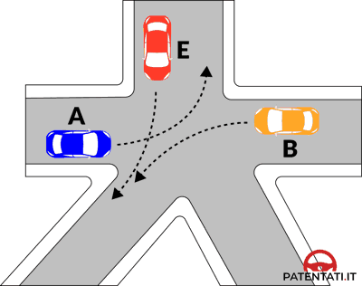
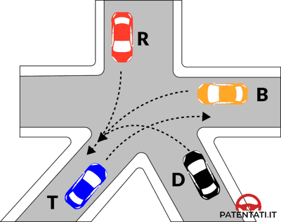
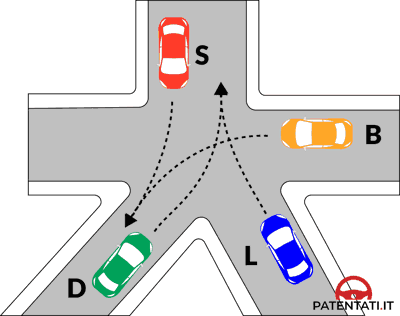
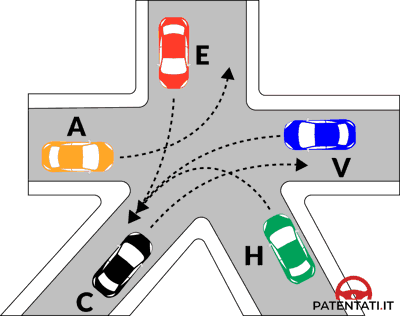
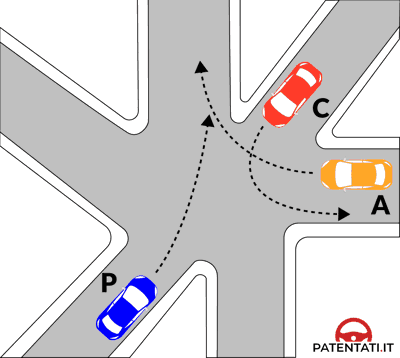
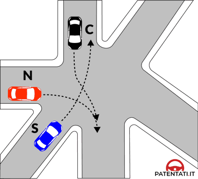
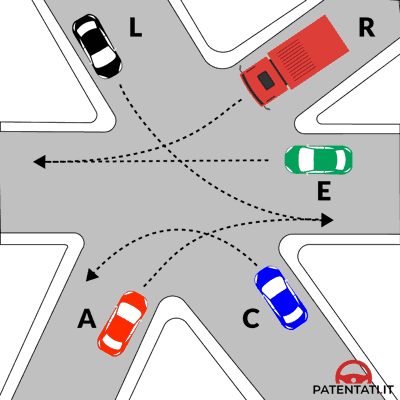
خامساً: القاموس التقني المبوب ثنائي اللغة (Glossario Tecnico A2-B1)
| المصطلح بالإيطالية | الترجمة بالعربية | الفخ الامتحاني وقاعدة الحل السريع |
|---|---|---|
| Precedenza | حق الأسبقية / الأولوية | تأكد هل السؤال يقول "يمتلك الأسبقية" (Ha la precedenza) أم "يعطي الأسبقية" (Deve dare la precedenza). |
| Destra libera | اليمين خالٍ / حر | مفتاح الباب بالكامل؛ المركبة ذات اليمين الحر تبدأ بالمرور أولاً ما لم توجد إشارات. |
| Impegnare l'incrocio | دخول / إشغال التقاطع | التقدم لوسط التقاطع والوقوف فيه لتحرير مسار المركبات الأخرى؛ ليست خروجاً نهائياً. |
| Passano contemporaneamente | يعبران معاً في نفس الوقت | تحدث حصراً عندما لا تتقاطع خطوط سير المركبتين (Traiettorie non interferenti). |
| Svolta a sinistra | الانعطاف لليسار | تفرض إعطاء الأسبقية للقادمين من الأمام (من المقابل)، وتؤدي للوقوف في منتصف التقاطع. |
| Traiettoria | مسار / خط سير المركبة | الخط المنحني أو المستقيم الذي ترسمه السيارة عند عبور التقاطع. |
| Diritto di precedenza | حق الأولوية (الشارع الرئيسي) | لوحة المعين الأصفر؛ أصحاب هذا الطريق يمرون قبل الطرق الفرعية مهما كان اتجاههم. |
| Pannello integrativo | اللوحة التكميلية ذات الخط العريض | توضح مسار الطريق الرئيسي؛ من يسير فوق الخط العريض يملك الأسبقية على الخطوط الرفيعة. |
| Previa intesa | باتفاق وتفاهم مسبق | تستخدم فقط إذا كانت كل السيارات الأربع يمينها مشغول وتوقفت تماماً عن الحركة. |